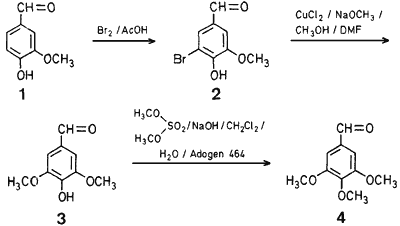

HTML by Rhodium
3,4,5-Trimethoxybenzaldehyde (4), a valuable pharmaceutical intermediate, is obtained commercially by Rosenmund reduction of 3,4,5-trimethoxybenzoyl chloride1. Recently, it was reported2 that the Reissert intermediate obtained from trimethoxybenzoyl chloride with sodium cyanide and quinoline on acid hydrolysis yielded 4 in almost quantitative yield. We now report the synthesis of 4 from vanillin3 (1), which we feel is economically more attractive than the existing methods.
Scheme 1
Vanillin (1) was brominated at room temperature in glacial acetic acid with 1.1 equivalents of bromine to 5-bromovanillin (2) in 95% yield. The alkoxylation3 of 2 was found to occur readily in one hour with freshly prepared sodium methoxide in dimethylformamide and methanol in the presence of 0.4 equivalents of anhydrous copper(II) chloride at 100�C to yield 4-hydroxy-3,5-dimethoxybenzaldehyde (3) in 83% yield. The methylation of 3 was carried out at room temperature using phase-transfer catalysis4. Of several phase-transfer catalysts examined, Adogen 464 [methyltrialkyl(C8-C10) ammonium chloride] was most effective. The reaction proceeded in dichloromethane at room temperature with 1.5 equivalents of dimethyl sulfate and 2.5 equivalents of sodium hydroxide to yield 3,4,5-trimethoxybenzaldehyde (4) in 96% yield.
5-Bromovanillin (2)
To vanillin (1; 15.2 g, 0.1 mol) in glacial acetic acid (75 ml) is added bromine (17.6 g, 0.11 mol). After stirring for 1 h, the reaction mixture is diluted with ice/water (200 ml), the precipitated solid is filtered, washed with water, and dried to give 2; yield: 22.0 g (95%); mp 160-162�C (Lit.5 mp 163-164�C); Purity: 97% by G.L.C.
4-Hydroxy-3,5-dimethoxybenzaldehyde (3)
In a two-necked round bottomed flask equipped with a Claisen distillation head, a thermometer, and a magnetic stirring bar, is dissolved freshly cut sodium (4.9 g, 0.214 mol) in dry methanol (100 ml). After distillation of 30-35 ml of methanol, a solution of 2 (11.5 g, 0.0497 mol) and anhydrous copper(II) chloride (2.7 g, 0.02 mol) in dimethylformamide (50 ml) is added in one portion and the distillation is continued, maintaining the oil bath temperature at 110-115�C. After 1 h, the temperature of reaction mixture reaches 100�C and the reaction is found to be complete by G.L.C.
After another 10 min (total methanol distilled 80 ml), the reaction mixture is diluted with water (100 ml), acidified with 6 normal hydrochloric acid (50 ml), and extracted with ethyl acetate (2 x 75 ml). The ethyl acetate extract is washed with water (2x50 ml), dried with magnesium sulfate, and evaporated in vacuo to give 3; yield: 7.5 g (83%); mp 108-110�C (Lit.6 mp 109-110�C).
A similar reaction with copper(II) chloride (0.7 g, 0.0052 mol) is complete in 1.5 h (80 ml of methanol is collected).
3,4,5-Trimethoxybenzaldehyde (4)
A mixture of 3 (3.0 g, 0.0164 mol), sodium hydroxide (1.7 g, 0.0425 mol), dimethyl sulfate (3.1 g, 0.0246 mol), phase-transfer catalyst (0.2 g of Adogen 464), water (50 ml), and dichloromethane (50 ml) is vigorously stirred at room temperature. After 16 h, the aqueous layer is found to contain only traces of starting material (G.L.C.). The organic layer is separated and the aqueous layer is extracted with dichloromethane (50 ml). The combined dichloromethane extracts are thoroughly washed with ammonium hydroxide (25-30 ml of 30% NH4OH is diluted to 100 ml), followed by water (50 ml), and dried with magnesium sulfate. Removal of solvents in vacuo gives 4; yield: 2.9 g; mp 70-72�C which is identical with an authentic sample of 4 (mixture mp and 1H-NMR spectral comparison). From the aqueous layer, by acidification and ethyl acetate extraction, is isolated 0.2 g of starting material.
Based on this, the yield of 4 is 96%. The isolated product 4 is recrystallized from cyclohexane (90% recovery) as long needles; mp 74-76�C (Lit.7 mp 74�C).